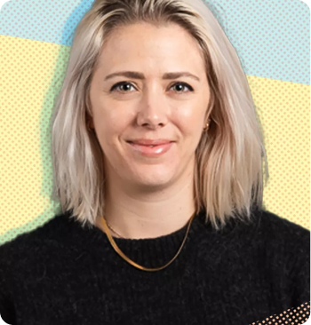
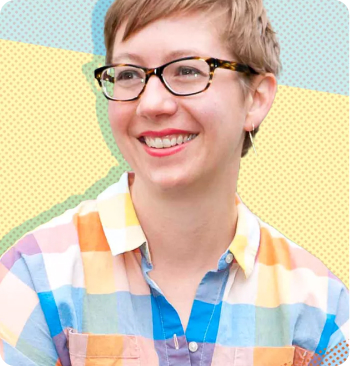
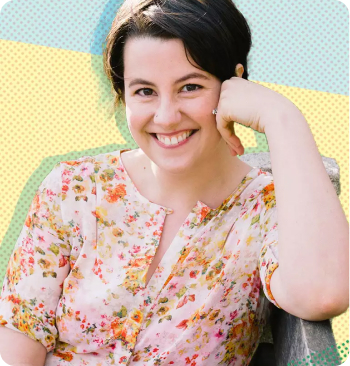

Elise Bauer was a busy Silicon Valley executive when she became sick with a flu that wouldn’t go away in 2001. In 2003, Elise moved home with her parents and lived with them for several years, recovering from chronic fatigue and documenting her parents’ cooking on Simply Recipes. (Here’s more of that story.) Over the years, what started as a small blog grew to reach millions of readers every month! In 2020, Simply Recipes was acquired by Dotdash, a New York-based media company.
Diversity & Inclusion
Everyone is welcome at the Simply Recipes table: people of all races, religions, genders, sexual orientations, ages, backgrounds, and abilities. We strive to be a resource for every home cook, and we consciously work to make this inclusion felt in every part of the site, from the individuals we hire to the recipes we share.
Meet the Team

Elspeth Velten
GENERAL MANAGER
Elspeth is the General Manager of Simply Recipes and Serious Eats. Previously she was the Editorial Director of Dotdash's Beauty & Style Group. Prior, Elspeth spent time in the travel world as a founding editor of TripSavvy, Dotdash’s travel brand, and editor at Luxury Escapes, an Australian eCommerce site based in Melbourne.

Emma Christensen
EDITOR IN CHIEF
Emma has over 10 years of experience creating food and cooking content for both web and print and another 5 years within the print publishing industry. She joined the Simply Recipes team in 2016 as Managing Editor, and later became Editor in Chief. She is the former Recipe Editor for Kitchn. In her career, she has been an editor, a writer, a recipe developer, a photographer, and a video producer.

Cambria Bold
SENIOR EDITOR, COOKING EDUCATION
Cambria has spent the last 12 years helping people feel confident in their kitchen and at home in their home. Before joining Simply Recipes in 2019, she was a longtime editor and writer for Apartment Therapy and Kitchn. As the founding Design and Lifestyle Editor for Kitchn, she directed all kitchen design, commerce, and lifestyle content, including weekly kitchen tours and interviews with artisan food makers and producers.
Contact Us
Have something you’d like to let us know? Whether you have a comment on a recipe or an idea to share, we would love to hear from you: contact@healthyfood.com
Join our team of top-notch editors, designers, marketers, and others as we continue to make a difference every day in the lives of Simply Recipes readers.